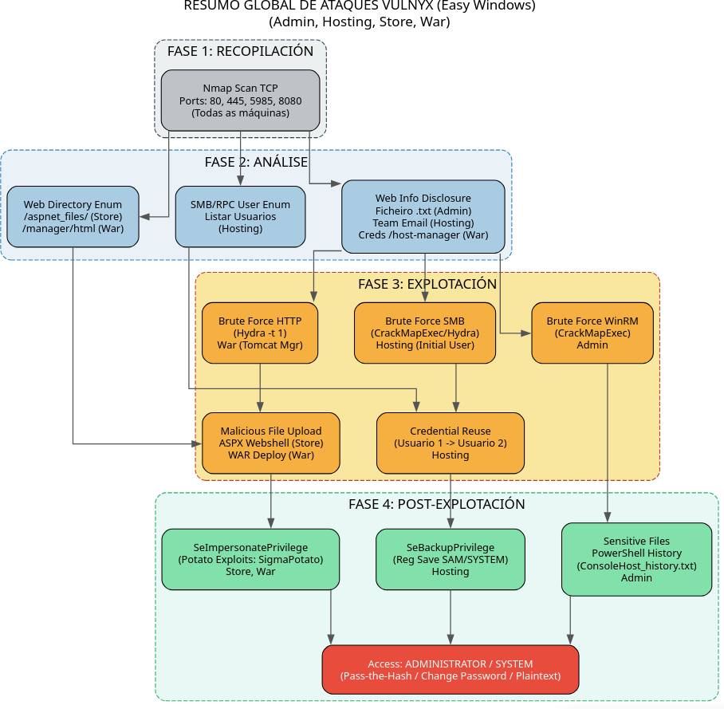

Diagrama Global de Ataque easy Windows VulNyx
Este diagrama actúa como un mapa de calor das técnicas utilizadas na serie VulNyx, agrupando as máquinas por vector de ataque en cada fase para ofrecer unha visión de conxunto rápida.

Resumo Comparativo destas 4 Máquinas:
Estas catro máquinas representan un excelente laboratorio de Pentesting en contornas Windows Modernas (Server 2019 / Windows 10), centrándose en malas configuracións de servizos, fugas de información e abusos de privilexios nativos en lugar de exploits de kernel.
Fase 1: Recopilación
O obxectivo principal é identificar o sistema operativo e os servizos expostos.
- Identificación do SO: Todas as máquinas presentan un TTL ≈ 128 no comando
ping, o que confirma que son sistemas Windows. - Perfís de Portos:
- Perfil "Windows Standard" (Admin, Hosting, Store): Expoñen a tríada clásica:
- Porto 80 (HTTP): Servidor Microsoft IIS.
- Porto 445 (SMB): Microsoft-DS para compartir ficheiros e impresoras.
- Porto 5985 (WinRM): Servizo de administración remota (esencial para obter shells estables con
Evil-WinRM).
- Perfil "Java Application" (War):
- Porto 8080: Executa Apache Tomcat, desviando a atención cara a vulnerabilidades web de Java e paneis de xestión.
- Perfil "Windows Standard" (Admin, Hosting, Store): Expoñen a tríada clásica:
Fase 2: Análise
Nesta fase detéctanse os vectores de entrada. O patrón común é a Fuga de Información (Information Disclosure).
- Fuga de Usuarios:
- Admin:
gobusteratopa un ficheiro de texto oculto (/[file].txt) que revela un nome de usuario válido. - Hosting: A web ten unha sección "Team" que expón correos electrónicos, revelando o formato de nomes de usuario (
nome.apelido). - War: O directorio
/host-managercontén exemplos de configuración con credenciais, o que suxire nomes de usuario potenciais (tomcat,admin).
- Admin:
- Configuracións Débiles:
- Store: O uso dun diccionario específico para IIS revela o directorio
/aspnet_files/con capacidade de subida de ficheiros sen restricións. - Hosting: A enumeración SMB/RPC permite listar todos os usuarios do dominio e probar se reciclan contrasinais (Password Spraying/Reuse).
- Store: O uso dun diccionario específico para IIS revela o directorio
Fase 3: Explotación
Como se consegue o acceso inicial (foothold).
- Ataques de Forza Bruta:
- Admin:
CrackMapExeccontra WinRM usando o usuario atopado na Fase 2. - Hosting: Forza bruta contra SMB para comprometer ao primeiro usuario. Despois, descóbrese que a contrasinal dese usuario funciona para outro usuario (
[usuario3]), permitindo o acceso víaEvil-WinRM. - War: Uso de
Hydra(co parámetro crítico-t 1para evitar bloqueos) contra o panel/manager/htmlde Tomcat.
- Admin:
- Upload & Execute (Webshells):
- Store: Subida dunha webshell ASPX (xerada con
msfvenom) a través do formulario web descuberto. - War: Despois de acceder ao Tomcat Manager, súbese un arquivo WAR malicioso que contén unha reverse shell JSP.
- Store: Subida dunha webshell ASPX (xerada con
Fase 4: Post-Explotación (Escalada de Privilexios)
Unha vez dentro, como chegamos a Administrator ou SYSTEM. Esta é a fase máis educativa desta serie.
1. Abuso de Artefactos do Sistema
- Máquina: Admin
- Técnica: Enumeración do historial de comandos de PowerShell.
- Detalle: O ficheiro
ConsoleHost_history.txtcontén comandos pasados onde o administrador escribiu as súas credenciais en texto claro. É un fallo de seguridade humana/operacional moi común.
2. Abuso de SeBackupPrivilege
- Máquina: Hosting
- Técnica: Extracción de segredos do rexistro e Pass-the-Hash.
- Detalle: O usuario ten o privilexio
SeBackupPrivilege, que permite ler calquera ficheiro do sistema (ignorando as ACLs).- Úsase
reg savepara copiar os ficheiros SAM e SYSTEM. - Úsase
secretsdumpoffline para extraer o hash NTLM do Administrador. - Úsase
Evil-WinRM -H(Pass-the-Hash) para loguearse como Admin sen saber o contrasinal.
- Úsase
3. Abuso de SeImpersonatePrivilege (Familia Potato)
- Máquinas: Store e War
- Técnica: Token Impersonation.
- Detalle: As contas de servizo web (IIS AppPool en Store e Local Service en War) adoitan ter o privilexio
SeImpersonatePrivilege.- Transférese un exploit da familia "Potato" (neste caso SigmaPotato, que funciona en Windows modernos).
- O exploit forza ao sistema (SYSTEM) a autenticarse contra un proceso controlado polo atacante.
- O atacante rouba o token de SYSTEM e executa un comando (como cambiar o contrasinal do administrador ou crear un usuario novo) para obter control total.